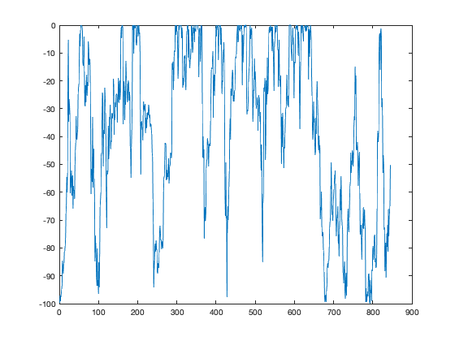
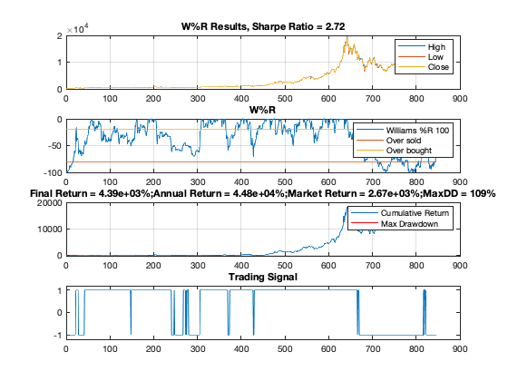
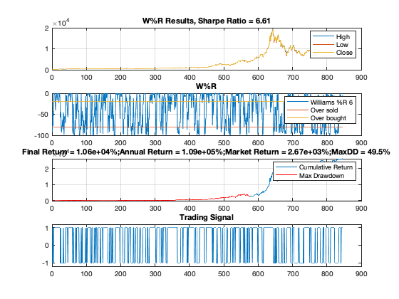
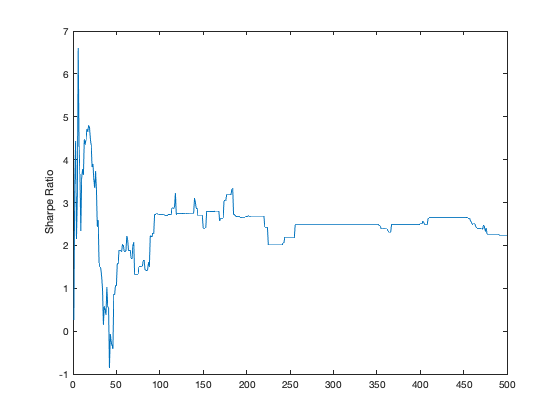
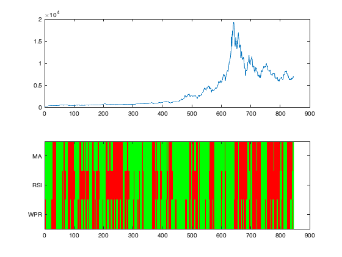
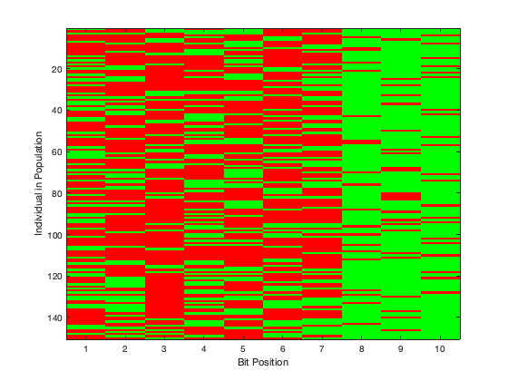
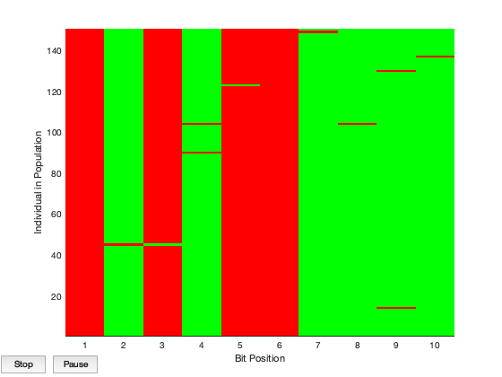

Contents
Williams 策略
close all; clc warning off; addpath('data') addpath('gaFiles')
Load data
BTC = xlsread('/data/BTCUSD_gemini.xlsx','C1:E31714'); testPts = floor(0.8*length(BTC)); step = 30; % 30 minute interval BTCclose = BTC(1:step:testPts,:); BTCfuture = BTC(testPts+1:step:end,:); annualScaling = sqrt(250*60*11/step); cost = 0.00075;
Williams %R
w = willpctr(BTCclose,50); figure plot(w)
Williams %R trading strategy
Generate a trading signal each time we cross the -50% mark (up is a buy, down is a sell).
figure wpr(BTCclose,100,annualScaling,cost)
WPR performance (result:param=6)
range = {1:500};
wfun = @(x) wprFun(x,BTCclose,annualScaling,cost);
tic
[maxSharpe,param,sh] = parameterSweep(wfun,range);
toc
wpr(BTCclose,param,annualScaling,cost)
figure
plot(sh)
ylabel('Sharpe Ratio')
Starting parallel pool (parpool) using the 'local' profile ... connected to 6 workers. Elapsed time is 26.803003 seconds. 
Generate trading signals
N = 1; M = 13; thresh = 45; P = 23; Q = 12;
sma = leadlag(BTCclose(:,end),N,M,annualScaling,cost);
srs = rsi(BTCclose(:,end),[15*Q Q],thresh,annualScaling,cost);
swr = wpr(BTCclose,param,annualScaling,cost);
signals = [sma srs swr];
names = {'MA','RSI','WPR'};
Trading signals
Plot the "state" of the market represented by the signals
figure ax(1) = subplot(2,1,1); plot(BTCclose(:,end)); ax(2) = subplot(2,1,2); imagesc(signals') cmap = colormap([1 0 0; 0 0 1; 0 1 0]); set(gca,'YTick',1:length(names),'YTickLabel',names); linkaxes(ax,'x');
Generate initial population
Generate initial population for signals
close all I = size(signals,2); pop = initializePopulation(I); imagesc(pop) xlabel('Bit Position'); ylabel('Individual in Population') colormap([1 0 0; 0 1 0]); set(gca,'XTick',1:size(pop,2))
Fitness Function
Objective is to find a target bitstring (minimum value)
type fitness
function f = fitness(pop,indicator,price,scaling,cost)
% See also tradeSignal, initializePopulation
%%
% Copyright 2010, The MathWorks, Inc.
% All rights reserved.
%% Generate Trading Signal from Population
s = tradeSignal(pop,indicator);
s = (s*2-1); % scale to +/-1 range
col = size(s,2);
%% PNL Caclulation
r = [zeros(1,col);
s(1:end-1,:).*repmat(diff(price),1,col)-abs(diff(s))*cost/2];
f = -scaling*sharpe(r,0);
Objective function definition
obj = @(pop) fitness(pop,signals,BTCclose(:,end),annualScaling,cost);
Evalute objective for population
obj(pop)
ans =
Columns 1 through 7
-4.2484 -4.8973 -6.7208 1.7156 -4.2484 1.7156 -4.2484
Columns 8 through 14
-4.8973 -6.6089 -4.8973 -4.2484 -7.1048 1.7181 1.7181
Columns 15 through 21
1.7156 1.7181 1.7181 -6.5053 1.7181 -4.2484 -4.3200
Columns 22 through 28
1.7156 -6.6064 -4.8973 2.2164 -4.3487 1.7181 1.7181
Columns 29 through 35
-6.6089 1.7181 -4.8973 -4.3200 1.7156 3.8621 4.4033
Columns 36 through 42
1.7181 1.7181 -7.1048 1.7181 -4.2484 1.7181 -4.8973
Columns 43 through 49
-4.3200 -6.9596 -4.3200 1.7181 -6.6089 -7.1048 1.7156
Columns 50 through 56
1.7156 -6.9596 1.7156 -4.8205 1.7181 -4.2484 -4.2484
Columns 57 through 63
1.7156 1.7181 -4.8973 -4.2484 -4.2484 1.7181 -6.4118
Columns 64 through 70
1.7156 -6.6089 -6.6503 -6.6089 1.7156 -4.2484 -4.8973
Columns 71 through 77
-4.2484 1.7181 1.7181 2.2164 -4.4023 2.2164 4.4033
Columns 78 through 84
-4.2484 1.7181 1.7156 1.7181 -4.8973 1.7156 2.2164
Columns 85 through 91
1.7156 -4.2484 -6.6089 -4.2484 1.7156 1.7181 1.7181
Columns 92 through 98
1.7181 1.7181 -4.8205 -4.8973 -4.3200 -4.8205 -4.8973
Columns 99 through 105
-6.6064 -4.2484 -4.4697 1.7156 1.7181 1.7156 -4.2484
Columns 106 through 112
-4.2484 1.7181 1.7156 1.7181 1.7156 1.7181 1.7156
Columns 113 through 119
-4.8973 1.7181 1.7156 1.7156 4.1919 1.7156 4.1919
Columns 120 through 126
1.7181 -4.8973 -6.6064 -4.4023 1.7181 1.7181 -6.6064
Columns 127 through 133
-4.2484 2.2164 1.7156 -4.2484 -6.7208 -6.6064 -4.3200
Columns 134 through 140
-4.3487 2.2164 -6.6064 1.7181 1.7181 1.7181 1.7156
Columns 141 through 147
-6.6089 -4.4023 -4.3200 -4.3200 3.8621 -4.8973 1.7181
Columns 148 through 150
-4.3487 -4.8973 1.7181
Solve With Genetic Algorithm
Find best trading rule and maximum Sharpe ratio (min -Sharpe ratio)
options = gaoptimset('Display','iter','PopulationType','bitstring',... 'PopulationSize',size(pop,1),... 'InitialPopulation',pop,... 'CrossoverFcn', @crossover,... 'MutationFcn', @mutation,... 'PlotFcns', @plotRules,... 'Vectorized','on'); [best,minSh] = ga(obj,size(pop,2),[],[],[],[],[],[],[],options);
Best Mean Stall
Generation Func-count f(x) f(x) Generations
1 300 -7.105 -2.5 0
2 450 -7.105 -3.756 1
3 600 -7.105 -4.928 2
4 750 -7.105 -5.359 3
5 900 -7.105 -5.64 4
6 1050 -7.105 -6.037 5
7 1200 -7.105 -6.359 6
8 1350 -7.105 -6.502 7
9 1500 -7.105 -6.544 8
10 1650 -7.105 -6.307 9
11 1800 -7.105 -6.655 10
12 1950 -7.105 -6.801 11
13 2100 -7.105 -6.812 12
14 2250 -7.105 -6.754 13
15 2400 -7.105 -6.734 14
16 2550 -7.105 -6.933 15
17 2700 -7.105 -6.767 16
18 2850 -7.105 -6.792 17
19 3000 -7.105 -6.728 18
20 3150 -7.105 -6.773 19
21 3300 -7.105 -6.848 20
22 3450 -7.105 -6.812 21
23 3600 -7.105 -6.517 22
24 3750 -7.105 -6.473 23
25 3900 -7.105 -6.548 24
26 4050 -7.105 -6.474 25
27 4200 -7.105 -6.657 26
28 4350 -7.105 -6.415 27
29 4500 -7.105 -6.58 28
30 4650 -7.105 -6.75 29
Best Mean Stall
Generation Func-count f(x) f(x) Generations
31 4800 -7.105 -6.863 30
32 4950 -7.105 -6.791 31
33 5100 -7.105 -6.814 32
34 5250 -7.105 -6.815 33
35 5400 -7.105 -6.724 34
36 5550 -7.105 -6.847 35
37 5700 -7.105 -6.776 36
38 5850 -7.105 -6.699 37
39 6000 -7.105 -6.627 38
40 6150 -7.105 -6.649 39
41 6300 -7.105 -6.639 40
42 6450 -7.105 -6.629 41
43 6600 -7.105 -6.777 42
44 6750 -7.105 -6.72 43
45 6900 -7.105 -6.926 44
46 7050 -7.105 -6.803 45
47 7200 -7.105 -6.841 46
48 7350 -7.105 -6.868 47
49 7500 -7.105 -6.675 48
50 7650 -7.105 -6.744 49
51 7800 -7.105 -6.807 50
Optimization terminated: average change in the fitness value less than options.FunctionTolerance.
 Evaluate Best Performer
s = tradeSignal(best,signals); s = (s*2-1); % scale to +/-1 r = [0; s(1:end-1).*diff(BTCclose(:,end))-abs(diff(s))*cost/2]; sh = annualScaling*sharpe(r,0); %———————————————————————————————————————————————————————————— [MDD,mddindex] = MAXDRAWDOWN(CPclose,r); annualreturn = sum(r) / CPclose(1) / length(r) * 360 * 24; marketreturn = (CPclose(end)-CPclose(1))/CPclose(1) - 1; % Plot results figure ax(1) = subplot(3,1,1); plot(BTCclose(:,end)) title(['Evolutionary Learning Resutls, Sharpe Ratio = ',num2str(sh,3)]) ax(2) = subplot(3,1,2); cumsumr = cumsum(r); plot(cumsumr), grid on hold on plot(mddindex(1):mddindex(end), cumsumr(mddindex(1):mddindex(end)),'r') legend('Cumulative Return','Max Drawdown') title(['Final Return = ',num2str(sum(r) / CPclose(1) * 100, 3),'%;',... 'Annual Return = ',num2str(annualreturn * 100, 3),'%;',... 'Market Return = ',num2str(marketreturn * 100, 3),'%;',... 'MaxDD = ',num2str(MDD * 100, 3),'%']) linkaxes(ax,'x') ax(3) = subplot(3,1,3); plot(s) title('Trading Signal') set(gca,'YLim',[-1.2 1.2]) linkaxes(ax,'x')
Undefined function or variable 'CPclose'. Error in strategy_Williams (line 89) [MDD,mddindex] = MAXDRAWDOWN(CPclose,r);
sma = leadlag(BTCfuture(:,end),N,M,annualScaling,cost); srs = rsi(BTCfuture(:,end),[P Q],thresh,annualScaling,cost); swr = wpr(BTCfuture,param,annualScaling,cost); signals = [sma srs swr]; s = tradeSignal(best,signals); s = (s*2-1); % scale to +/-1 r = [0; s(1:end-1).*diff(BTCfuture(:,end))-abs(diff(s))*cost/2]; sh = annualScaling*sharpe(r,0); %———————————————————————————————————————————————————————————— [MDD,mddindex] = MAXDRAWDOWN(CPfuture,r); annualreturn = sum(r) / CPfuture(1) / length(r) * 360 * 24; marketreturn = (CPfuture(end)-CPfuture(1))/CPfuture(1) - 1; % Plot results figure ax(1) = subplot(3,1,1); plot(BTCfuture(:,end)) title(['Evolutionary Learning Resutls, Sharpe Ratio = ',num2str(sh,3)]) ax(2) = subplot(3,1,2); cumsumr = cumsum(r); plot(cumsumr), grid on hold on plot(mddindex(1):mddindex(end), cumsumr(mddindex(1):mddindex(end)),'r') legend('Cumulative Return','Max Drawdown') title(['Final Return = ',num2str(sum(r) / CPclose(1) * 100, 3),'%;',... 'Annual Return = ',num2str(annualreturn * 100, 3),'%;',... 'Market Return = ',num2str(marketreturn * 100, 3),'%;',... 'MaxDD = ',num2str(MDD * 100, 3),'%']) linkaxes(ax,'x') ax(3) = subplot(3,1,3); plot(s) title('Trading Signal') set(gca,'YLim',[-1.2 1.2]) linkaxes(ax,'x')